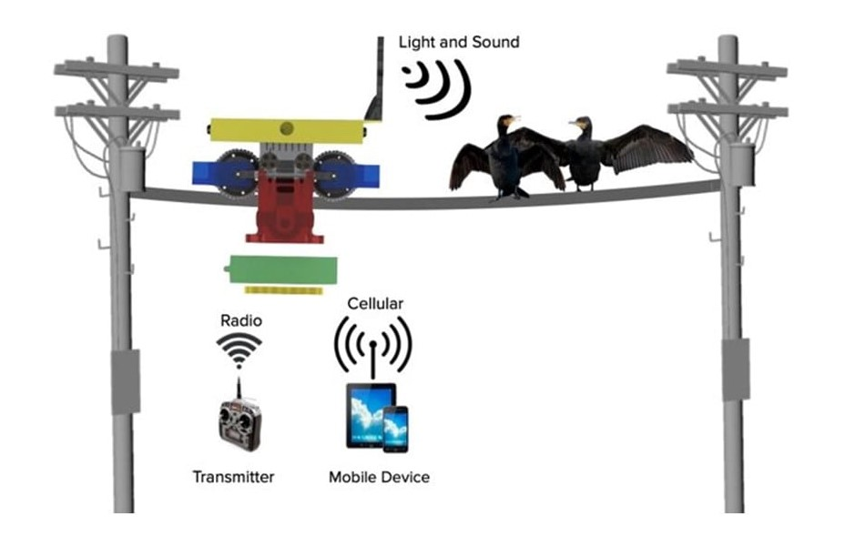

Robotic Bird Deterrent
Objective
Occasionally causing power outages for up to 10,000 customers, ravens continue to damage equipment at Eversource Energy's Rimmon Substation in Goffstown, New Hampshire. To address this issue, a bird deterrent robot prototype is developed that uses an ultrasonic rangefinder to detect cormorants and used flashing lights and sound to deter them.
My Contributon
- Programmed a state machine in ROS to enable high-level decision-making and establish communications between ROS and an Arduino microcontroller that handles low-level functionality of peripherals.
- Trained a custom YOLOv5 raven detection algorithm to recognize ravens of a specific species, integrated into the ROS controller for collision avoidance.
- Designed a mobile app using ReactJS to remotely monitor the status of the robot via an Amazon Web Services (AWS) database server.
- Developed an interface that allows communication between the AWS server and the Jetson Nano controller board of the robot to enable remote control feature.
